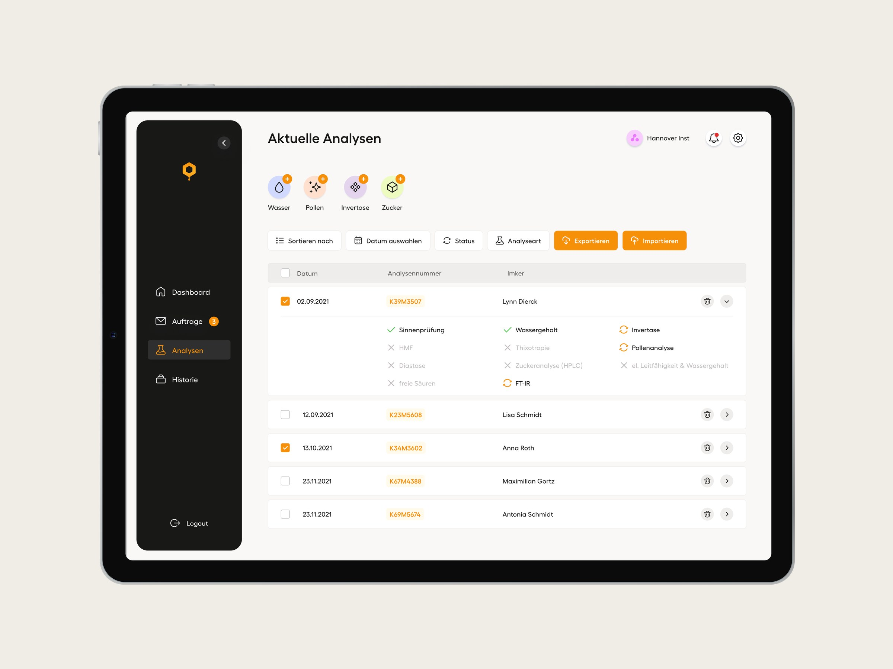
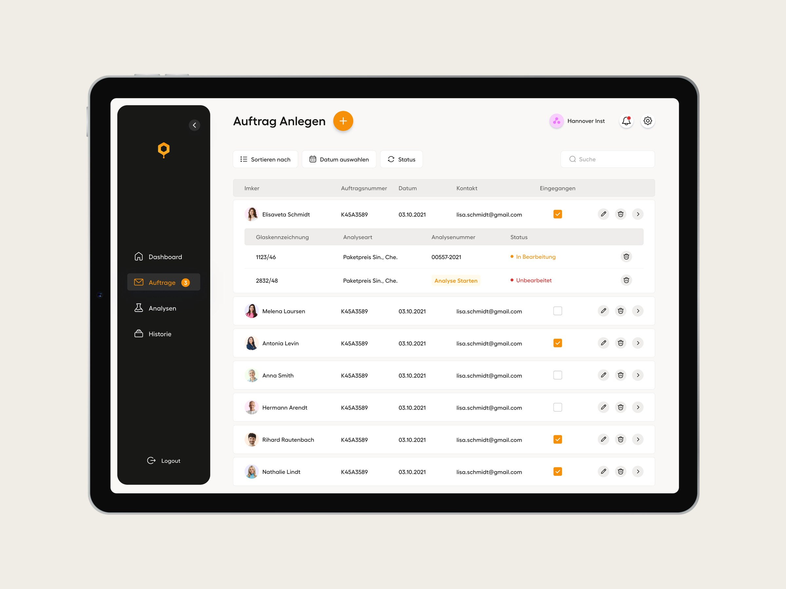
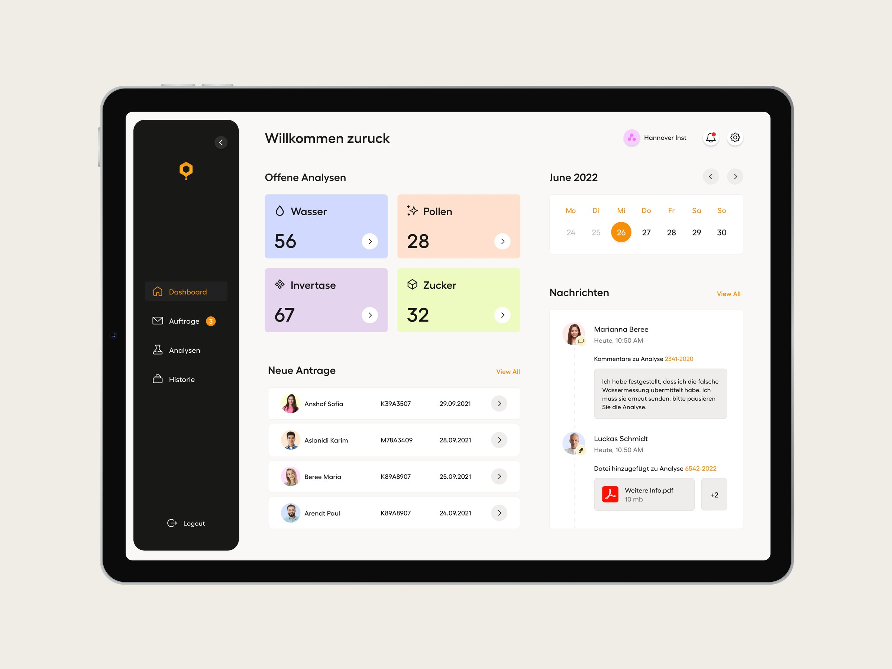
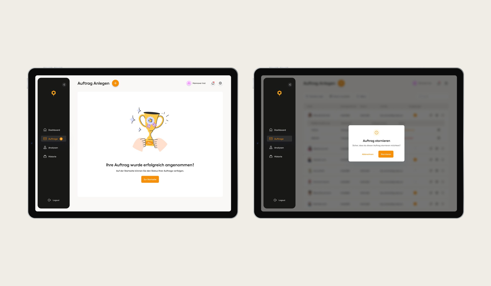

Redesigning a certification platform where mistakes are costly
A web platform for certifying honey products, serving two very different audiences: beekeepers who apply for certification, and research institutes that review, validate and approve those applications. Each certificate affects food safety and product quality, so the institutes follow strict processes and errors are expensive. I focused on the institute side – the workspace where staff manage requests, upload lab results, communicate with applicants and issue approvals.
- Role
- Product Designer · research, UX redesign, prototyping, validation
- Users
- Beekeepers (B2C) & research institutes (B2B)
- Timeline
- 2021
- Platform
- Web

100%
Of validation participants could instantly tell new applications from reviewed ones – the platform's #1 pain point
5
Core usability problems identified in research and designed out
2
User groups – applicants and reviewers – served by one platform
Problem
A high-stakes process running on a confusing tool
The old platform slowed institute staff down instead of supporting them. Navigation was confusing, key actions like uploading results or approving applications were hidden, the system gave no feedback after a task was done, and much of the communication with applicants happened outside the platform – in plain email, with addresses copied by hand.
For beekeepers on the other side it was just as opaque: after submitting an application they had no visibility into where it stood and no reliable channel to reach the institute – so they wrote emails, which landed outside the system and made the loop even messier.
How do you make a process where every mistake affects food safety feel clear, fast and reliable?
Research
Watching staff work, not asking them to complain
I planned and ran remote, task-based usability tests with institute staff: reviewing new applications, uploading results, contacting applicants, approving certifications. Five problems showed up again and again:
🚪 Unclear navigation
Staff clicked into old cases by mistake – new and already-reviewed applications weren't clearly separated.
📤 Hidden actions
"I thought I still had to email the results" – the upload action was so buried that users didn't believe it existed.
🔄 No feedback
After critical actions the system stayed silent. Users clicked twice or more, unsure whether anything had worked.
✉️ Broken communication
No built-in way to message applicants – staff copied email addresses manually and finished tasks outside the system.
📑 Inefficient workflows
The application list was described as "overwhelming" – staff struggled to scan it and prioritize their day.
Framing
From complaints to design questions
The tests showed the problems ran deeper than cosmetic UI issues – whole workflows were fragmented. I turned the findings into the questions that drove the redesign:
- How might we make core actions like uploading results or contacting applicants easy to find?
- How might we help staff quickly review and prioritize incoming applications?
- How might we reduce friction and uncertainty in approvals and archiving?
- How might we create smoother communication between institutes and applicants?
Success
Defining how success would be measured
The old platform had no analytics at all – nobody could say how well it worked. So alongside the redesign I proposed the platform's first success metrics:
01
Task completion rate. How many users finish uploads and approvals without getting stuck.
02
Time on task. How long it takes to review and certify an application.
03
System usage. Whether staff use built-in messaging instead of switching to email.
04
Drop-off rate. How often people start but don't finish key flows.
05
Support tickets. The number of requests caused by usability issues.
Design
Redesigning around the day, not the database
I sketched flows, built wireframes and moved to high-fidelity prototypes structured around how staff actually work through their day. The key choices:
- New applications highlighted in the list, so staff spot them right away
- Upload moved to the surface, with clear confirmation after every step
- A simplified approval flow with direct status feedback – "Approved", "Pending"
- A built-in communication panel, cutting out the copy-paste email workaround
The redesign was two-sided by design. The same status model that gave staff clear feedback also powers the beekeeper's view: applicants see where their application stands – submitted, in review, approved – without writing a single email, and messages from the institute reach them inside the platform, next to the application they're about.


Validation
Testing the redesign with the same people
I brought the high-fidelity prototype back to institute staff and re-ran the tasks. The pain points were gone where it mattered most: every participant could now distinguish new from existing applications, uploads were found without hesitation, and approvals felt clear and reliable. Messaging improved communication on both sides of the loop – staff stopped copying addresses, applicants got answers where they expected them – with one honest caveat in the notes: delivery and notifications still needed refinement.

Outcome
Complex workflows can feel simple
Validation confirmed the redesign solved the problems research had surfaced: staff described the new platform as clearer, faster and less overwhelming. Along with the design, the team received the platform's first measurement framework – so every future improvement could be judged by numbers, not opinions.
For me this project was the full journey in miniature: research, framing, design, validation – plus an accidental crash course in honey certification. It proved how much smoother a complex, high-stakes workflow becomes when it's rebuilt around the people who run it.
When every mistake is costly, clarity isn't a nice-to-have. It's the product.
Next project